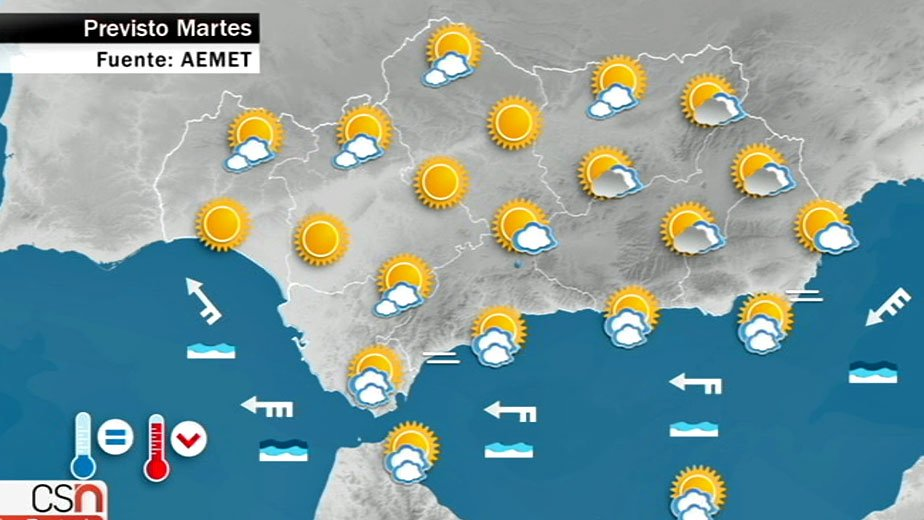

1. Vectores
En este tema vamos a trabajar con unos habitantes del país de las matemáticas llamados vectores.
¿Vectores? ¿Otro concepto nuevo? No exactamente. Muchas veces, ocurre que, trabajamos y vemos cosas de las que desconocemos su nombre y sus propiedades pero que están muy presentes en nuestras vidas. Pues esto mismo es lo que te ocurrido con los vectores hasta el momento. Vamos a ver varios ejemplos que dan muestra de ello.
¿Has observado alguna vez un mapa del tiempo como el que se muestra a continuación? En él aparecen unas flechas, que nos indican la dirección, el sentido y la intensidad (fuerza) del viento. Estas flechas son vectores. Así, podemos ver que el viento en Andalucía tendrá direcciones y sentidos distintos en un sólo día.


Durante todo el tema trabajaremos y nos familiarizaremos aún más con ellos. Formalizaremos su definición matemática, sus principales propiedades y aplicaciones, sólo algunas de ellas porque su presencia en otros campos de conocimiento como la Física, es infinita.
Por último, veremos la importancia que tienen los vectores en las construcciones de líneas rectas. Con estos últimos objetos, las rectas, concluiremos el tema. Ellas dan origen al título de nuestra unidad, El camino más corto, ya que como el propio Arquímedes recogía en su obra Sobre la Esfera y el Cilindro:
"... la recta es la más corta de todas las líneas que tienen los mismos extremos ...",
siendo la definición más común en nuestros días la que indica: "la línea recta es la distancia más corta entre dos puntos".